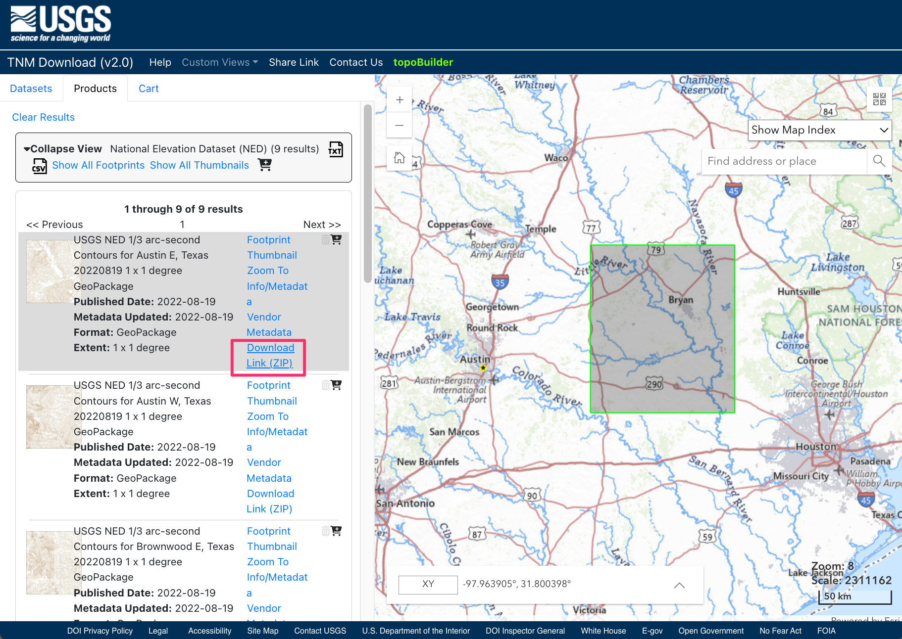
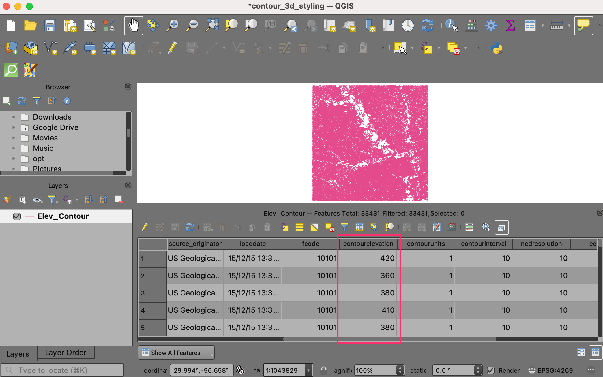
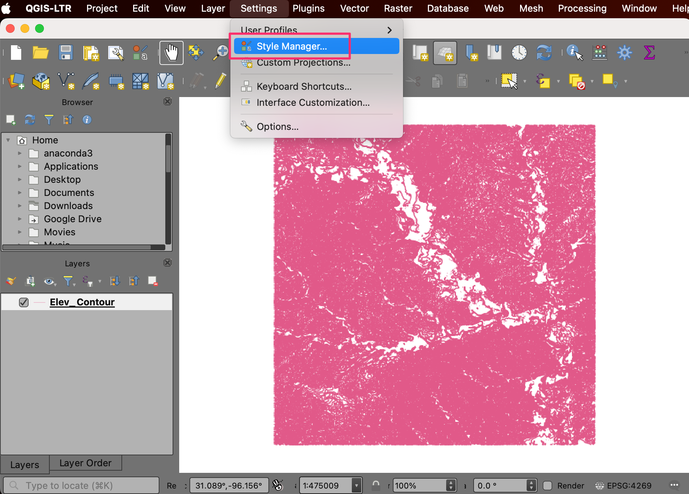

Ujaval Gandhi
Ujaval GandhiStyling Contours in 3D (QGIS3)¶
Contributed by: Steven Kim
In the previous tutorial, Styling a River Network with Expressions (QGIS3) we used expressions to filter and style a river network. In this tutorial, we will work with a contour dataset and style it using expressions to give it a 3D effect.
Overview of the task¶
We will use a geometry generator symbol layer to dynamically apply an offset to the contours and then apply a color ramp to create an appearance of a 3d map.

Get the data¶
The National Map is a collaborative effort among the U.S. Geological Survey (USGS) and other partners to improve and deliver topographic information for the Nation. We will download a contour dataset from The National Map downloader.
Visit the TNM Download v2. Browse to your region of interest. For this tutorial, we will be downloading the contours for a region around Austin, Texas.

On the downloader, look for the
Elevation Products(3DEP)dataset and check the box to see all subcategories. Select only theContours (1:24,000-scale)category. Under File Formats, selectGeoPackage.

Click the blue button Search Products to see the list of matching files.

In the results, you will find the
USGS NED 1/3 arc-second Contours for Austin E, Texasfile. Click on Download Link(ZIP) to download the zipped GeoPackage fileELEV_Austin_E_TX_1X1_GPKG.zip.

You can directly download the zip file at ELEV_Austin_E_TX_1X1_GPKG.zip
Data Source [USGS]
참고
You can also generate contours from any DEM layer and use it instead of the contours used here. Refer to our tutorial Working with Terrain Data (QGIS3) for step-by-step instructions.
Procedure¶
Unzip the ELEV_Austin_E_TX_1X1_GPKG.zip file on your computer. Locate the resulting ELEV_Austin_E_TX_1X1_GPKG.gpkg file in the QGIS Browser and expand it. Select the Elev_Contour layer and drag it to the canvas.

A new layer Elev_Contour will now be loaded and you should see the contour lines.

Right-click the Elev_Contour layer and choose Open Attribute Table. You will notice that the field
contourelevationcontains the elevation value for each contour line. This field name is important and is used in the expressions in subsequent steps.

We are now ready to style the contours. Before continuing, we must first add a color ramp suitable for coloring elevation. If you already have added the wiki-1.02 color ramp for our previous tutorial Creating a Block World Map (QGIS3), you can skip to Step 9. Click on Settings in the menubar and select Style Manager.

Click on the plus sign Add item at the bottom and select .

Scroll down the color ramps until you find wiki-1.02. There may be several with the same name, just click on one and click OK.

At the Save New Color Ramp window, enter the value
wiki-1.02as the Name.

Click Save to exit the window, then click Close to exit Style Manager. Now the wiki-1.02 color ramp is available to use in your projects going forward.

Now we can style the contours. Select the
Elev_Contourlayer and click on the button Open Layer Styling Panel. Select Simple Line to access its properties.

Switch Symbol layer type from Simple Line to Geometry Generator. This symbol layer allows us to dynamically change the geometry of features in the layer using an expression.

In the input box, enter this expression to translate each contour line in the y-axis by its elevation value. We use the
minimum()andmaximum()functions to find the range of values in the contourelevation column and the scale_linear() function to scale the elevation linearly from the minimum to the maximum to the desired y-offset range between 0 to 0.2 degrees. If your contour layer is in a CRS that has units other than degrees, make sure to adjust these values appropriately. Enter the expression and click OK.
translate($geometry,0,scale_linear("contourelevation", minimum("contourelevation"),maximum("contourelevation"),0,0.2))
Below Geometry Generator in the symbol window, select the Simple Line layer to access it’s properties. Click on the Data define override button for Color and select the Edit menu.

This brings up the Expression Builder dialog for the color of the line. Enter this expression to color contour lines by contourelevation value from the wiki-1.02 color ramp. We need to map the elevation values to the range expected by the color ramp (0 to 1). Instead of scale_linear function used earlier, we use the scale_polynomial function to scale the values in a non-linear way. Once the expression is entered, click OK.
ramp_color('wiki-1.02',scale_polynomial("contourelevation", minimum("contourelevation"),maximum("contourelevation"), 0,1,0.5))
You should see a 3D representation of the contours colored by elevation. Experiment with the coloring and scaling expressions to reveal different artistic representations of the landscape.

If you want to give feedback or share your experience with this tutorial, please comment below. (requires GitHub account)